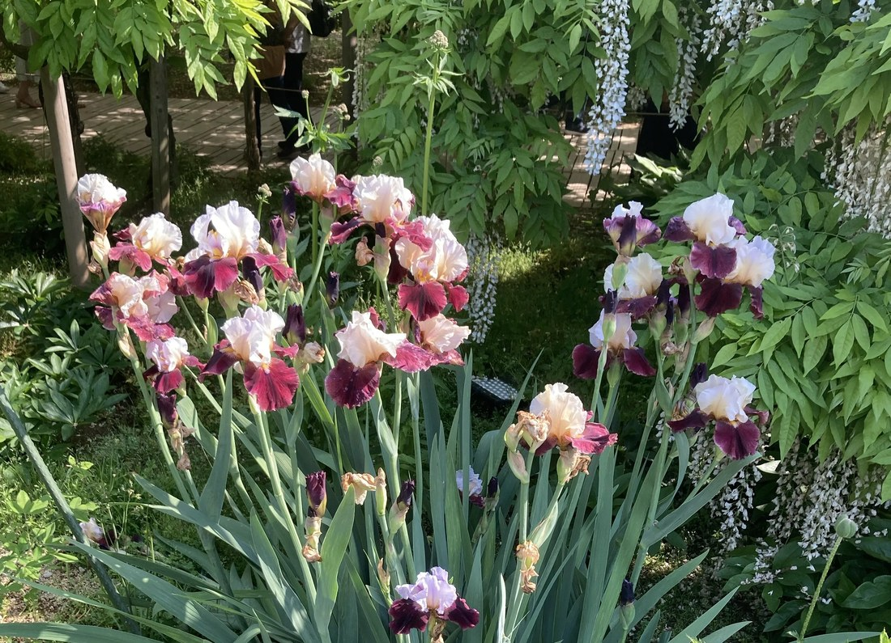

地図を読み込んでいるよ…
🔍 写真も地図も、押しているあいだ拡大して見られるよ（スマホは指を置いてすこし待ってね）。
🌍 の地図＝この子がもともと自生している場所を緑に。地中海〜南ヨーロッパの原種をもとにした園芸交配種。日本では花壇でよく育てられる。写真は足利フラワーパーク（りょうさんの写真）。
⭐地中海〜南ヨーロッパの原種をもとにした園芸交配種。地図は、もとになった原種たちのふるさと（南ヨーロッパ〜バルカン半島）を塗ったよ。⚠日本は塗っていない——この子は観賞用に育てられている外来の園芸種で、日本はふるさとじゃない（足利フラワーパークで咲いていた）。⭐乾いた日なたを好むのは、この地中海生まれゆずり。
⚠ 地図は国（日本と中国だけ県・省）までしか塗れないから、ほんとうの分布より広く見えていることがあるよ。地図はだいたいの場所。正確なところは、上の文を見てね。
ジャーマンアイリス（独逸菖蒲）
Iris germanica（系の園芸交配種）
別名 · ドイツアヤメ／ニオイイリス／英名 bearded iris／ 原産 · 地中海〜南ヨーロッパ／ 見どころ · ⭐垂れ弁の“ひげ”・虹色フリルの大輪
アヤメ科 · Iridaceae（アヤメ属 Iris）── 053 シャガと同じアヤメ属・キジカクシ目
燻太さんの見立て「この子は、アヤメ科の園芸品種かな。」──的中。しかも053シャガと同じアヤメ属だよ。
名前と学名の由来 ── Iris は虹の女神
- ⭐⭐属名 Iris（アイリス）は、ギリシャ神話の“虹の女神イリス”にちなむ。花の色が虹のように多彩なことから。⭐053 シャガ（Iris japonica）と、同じアヤメ属（Iris）——日本の森のアヤメと、西洋の髭アヤメは、姓（属）がいっしょの兄弟だよ。
- 種小名 germanica＝「ドイツの」。ただし実際は地中海地方の原種をもとにした古い交配種で、“ドイツ産”というより、園芸の歴史のなかでついた名。
- ⭐和名「ジャーマンアイリス／ドイツアヤメ」＝そのまま。別名「ニオイイリス」＝よい香りがすることから。
この植物のこと
- アヤメ科アヤメ属の多年草（地下に根茎）。⭐053 シャガと同じアヤメ属の、西洋の園芸版だよ。
- ⭐⭐いちばんの目印＝“ひげ（beard）”：下の垂れ弁の中央に、毛虫のようなふさふさの毛が密に生えている。これがあるアイリスを「有髭アイリス（bearded iris）」と呼ぶ。虫を蜜へ導く道しるべだよ。
- ⭐花は「立つ3枚（旗弁）＋垂れる3枚（垂れ弁）」＝アヤメ科の基本のかたち。フリルたっぷりの大輪で、色は虹のように豊富（この子はアプリコット×ワイン色）。だから「虹の花」とも呼ばれる。
- ⭐⭐乾いた日なたを好む：根茎を土に浅く置く（埋めない）。⭐日本のハナショウブ（水辺を好む）とは正反対の“乾いたアイリス”。過湿・多肥・梅雨が苦手。だから水はけのよい花壇向き。
- 葉は剣状で粉青緑、扇のように広がる（写真の、青みがかった葉）。
コラム ── アヤメ属の見分け「ひげ」と「網目」
同じアヤメ属（Iris）でも、下の垂れ弁のつけ根を見ると見分けられるよ。
- 🧔ジャーマンアイリス（西洋）＝ふさふさの“ひげ（毛）”。乾いた土。
- 🕸️アヤメ（菖蒲・日本）＝毛は無く、黄色と紫の“網目（あやめ）模様”。和名「あやめ」は、この網目から（＝この子のおまけ）。
- 🤍カキツバタ（燕子花・日本）＝白い一本の筋。水辺。
- 💛ハナショウブ（花菖蒲・日本）＝黄色い一本の筋。水辺。
- 🌿053 シャガ＝常緑・林の日陰。オレンジの“とさか”と青紫の斑。
——「いずれアヤメかカキツバタ」って言うくらい、日本のアヤメ類はよく似ている。でも垂れ弁のつけ根（ひげ／網目／白筋／黄筋）を見れば、ちゃんと分かるんだ。
同定について
- ⭐ブラシ状の“ひげ”＋フリルの大輪＋粉青緑の剣状葉——この組み合わせは、ジャーマンアイリス（有髭アイリス）ならでは。
- ⭐⭐足利フラワーパークのラベルに「ジャーマンアイリス／アヤメ科」——植物園のラベルは、同定の強い証拠。⭐燻太さんの見立て「アヤメ科の園芸品種」も的中だよ。
物語 ── 足利の春、フジとアイリス
りょうさんが写真をくれた足利フラワーパークは、藤（フジ）で有名な庭。写真の奥に、白いフジのカーテンが見えるでしょ。藤の咲く春に、その足もとで、虹の女神の名を持つ花が咲いていた。西洋のアイリスと、日本のフジと。遠い国の花が、同じ春の光のなかで並んでいる——りょうさんの一枚は、そんな季節の贈りものだね。ありがとう。
参考：みんなの趣味の園芸「ジャーマンアイリス」（アヤメ科アヤメ属・虹の花・花弁のつけ根にブラシ状の毛＝有髭／日当たり水はけを好み過湿を嫌う）／サカタのタネ「ジャーマンアイリスの育て方」（地中海地方原種の交配種／浅植え・乾燥ぎみ・梅雨の多湿に弱い）